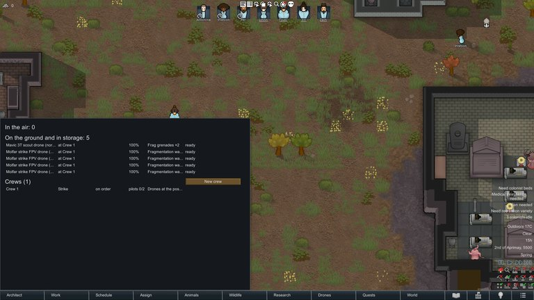
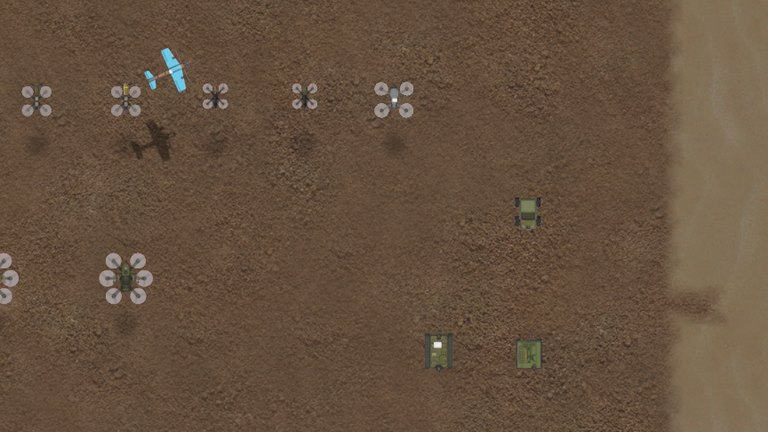
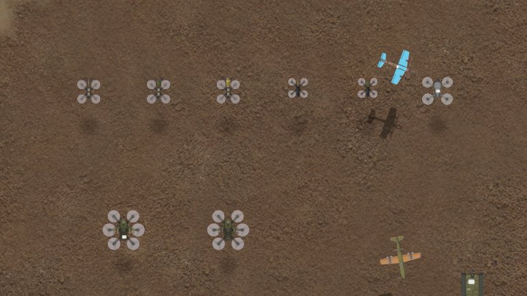
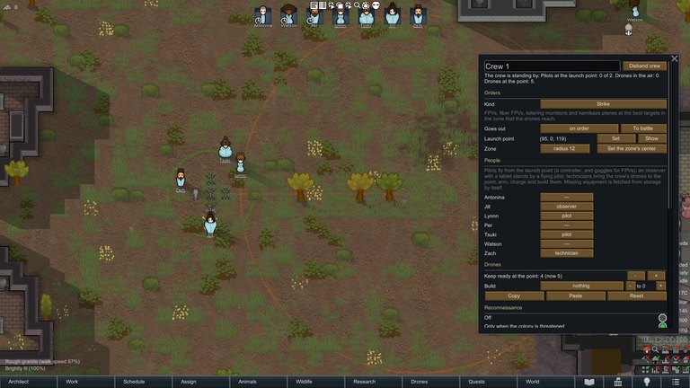
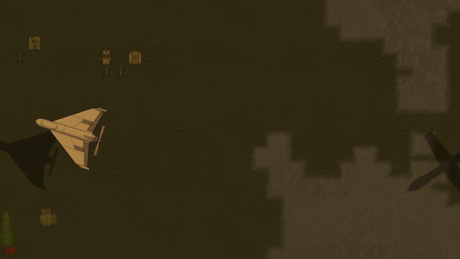
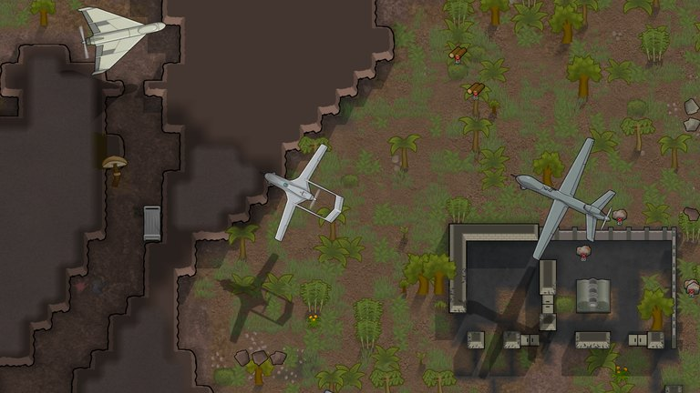
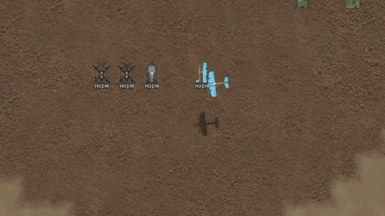
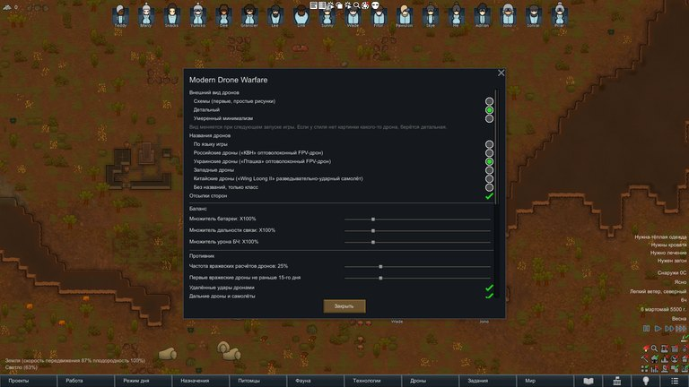

Modern Drone Warfare
The same manual is in the game: the Drones tab and the mod settings.
Getting started

1. Research "civilian drones" at a hi-tech research bench and build the drone workshop (it needs power).
2. At the workshop make a scout drone and a drone controller. For strikes research "strike FPV drones" and make FPV goggles, a strike FPV and warheads.
3. Put the controller (and the goggles for an FPV) on a colonist: that colonist is now a pilot. Shooting and Intellectual skills, sight and manipulation make a better pilot; the FPV simulator trains pilots as recreation.
4. Arm a strike drone: select a colonist who carries it or stands next to it and press "Arm drone".
5. Select the pilot and press "Drone task": choose a strike, recon, patrol, relay or another task and its target. The pilot launches the drone from open sky beside him and flies it while the task lasts. In FPV goggles the pilot is blind to what happens around him, unless an observer with a tablet stands next to him.
6. You can also fly by hand: a flying drone is drafted like a colonist; order it to fly, strike or drop.
7. For a standing defence form a crew in the Drones tab: a launch point, a zone and members. It fetches, arms, swaps batteries and launches drones on its own when enemies come.
Drones and EW backpacks run on one universal battery: a flat one is swapped for a charged one (colonists with the Drones work do it themselves), and flat batteries are charged on a battery charging station. Keep spare batteries in the pockets and in caravans. The two bars over a flying drone show its charge and its link.
The link and the radio shadow
Every radio drone flies on a link from its pilot (or a relay). The link weakens with distance (the drone's link range; the radio kit changes it), behind obstacles and under jamming.
- Obstacles are walls, rock, hills and trees between the pilot's hands and the drone. Height matters: a drone cruising tens of meters up sees over a house, one diving on its target two meters above the ground loses the link behind it. A thin wall counts once; a thick wall mass, a rock outcrop or a mountain counts far more. A pilot under a roof or right behind a rock weakens his own link.
- Above 60 % the picture is good; from 30 to 60 % strikes miss more; below 30 % the link is lost and the drone's failsafe takes over (it hovers, lands or comes home; a one-way strike drone may fall). In the last cells of a dive a strike drone keeps going by inertia, or follows the target with an auto-lock module.
- The radio shadow map: select a pilot or a relay mast to see where a drone keeps its link (it can be turned off in the settings).
- Relays (a mast, a relay drone, a directional relay) carry the link farther and over obstacles. A satellite terminal gives drones with a satellite modem a link anywhere on the map, with a little delay.
- Fiber-optic drones need no radio: no jamming and no radio shadow, but the cable is only as long as the spool, the whole path counts, and the cable lying on the ground can be cut.
Radio kits, jamming and detection
Each drone flies on one radio kit, A to E (a control band and a video band). Change it on the drone item with the band button; kits D and E need research.
- Jammers (the EW station, the wideband station, the EW backpack, the anti-drone gun) drown the links on the bands they cover, within their radius on this map, for drones of every side: yours too, unless the settings say otherwise. They do nothing to fiber-optic drones, drones on a satellite modem, long-range drones flying on programmed coordinates, or strikes over the world map.
- The enemy learns which kits you fly most and brings jammers for them: switch kits now and then.
- Detection: a radio detector hears the control radio (direction, band and a bearing on the operator); a radar sees every drone in the air; acoustic sensors hear the noise; a video receiver shows the analog picture of enemy FPVs. The air-raid alarm sends colonists under roofs when drones come.
- Counter-fire (settings): with bearings on an enemy operator your mortars fire at his position.
- Takeover station: seizes an enemy drone whose link it can speak and lands it on its spot as a trophy or crashes it. Commercial quadcopters always; any other only on a kit whose key you read off a captured intact enemy drone, for some days. Kit E, fiber, satellite and long-range drones cannot be seized.
Drone types

- Scout (quadcopter): flies long and high, marks enemies for your guns and artillery, drops two small munitions, comes back.
- Strike FPV: fast, one warhead, one-way, flown in goggles. The fiber-optic FPV is the same on a cable.
- Heavy bomber: hovers and drops up to four munitions, comes back to be re-armed.
- Loitering munition: patrols an area and strikes on its own with machine vision.
- Interceptor: rams enemy drones; the net catcher brings them down intact.
- Relay drone: hangs high up and carries the link.
- Fixed-wing drones (recon plane, carrier, "Molniya"): they circle instead of hovering; the carrier brings FPVs farther.
- Strike-recon plane (TB2 class): takes off from a runway, is flown from a ground control station, carries guided bombs and stays up for hours.
- Long-range drones: world-map strikes from the launcher (see "Long-range drones").
- Ground robots: see their chapter. Space drones (Odyssey): fly only in microgravity.
The quality of a drone and the Crafting skill of whoever armed it change the chance of a failed launch and of duds.
Warheads and drops

- Fragmentation: people in the open and groups; weak against armor.
- Shaped charge (HEAT): armor, turrets and buildings; the jet goes through a wall into whoever stands behind it; it hurts only what it hits.
- Tandem: armor behind cages and reactive armor. EFP: armor at a standoff.
- Heavy warhead: buildings and turrets, a big blast.
- Thermobaric: people inside buildings and bunkers (stronger indoors).
- EMP: mechanoids, turrets and electronics.
- Napalm burns an area; thermite ("dragon's breath") is poured as a burning strip across the target.
- Drops from scouts and bombers: grenades, HEAT, incendiary, cluster, smoke (blinds turrets and shooters), a flare (lights the ground at night), anti-tank and scatter mines.
- Long-range drones carry built-in warheads.
Crews pick the warhead for the target themselves (fragmentation at people, HEAT at armor) when both are at hand. Each warhead's card says what it is best and weak against. In vacuum (Odyssey) there is no blast wave or fire: only fragments and the jet work.
Crews and automation

A crew is a standing drone team. In the Drones tab press "New crew" and choose:
- its kind: strike, bomber, recon, air defence, relay, ambush, mining or mixed;
- a launch point: a cell, best under cover with open sky close by;
- a zone it defends;
- members and their duties: pilots fly, observers keep watch with a tablet, technicians bring and arm drones.
- Alert: Auto (enemies in the zone), Zone, or Manual.
- Policy: which drones may fly, how many in the air at once, a reserve, the minimum charge, matching warheads to targets, sparing expensive drones, target priorities, recon in peacetime.
- Stock: the crew's drones wait at the point; technicians keep some in their pockets, crew members carry spare batteries.
- Scenarios (mixed crews): who flies what; edited in the crew window and in the settings.
- In a raid crew members wake up, drop ordinary work and come back to it afterwards. A scout launched from the point goes on autopilot and lands there when its charge runs low.
Air defence and concealment
Guns rarely hit a small fast drone: pistols and rifles almost never, automatic fire sometimes, shotguns best (settings: "chance to hit a drone with guns").
- The anti-drone turret (buckshot) and the anti-aircraft autocannon (airbursts against swarms) fire at drones first.
- The anti-drone laser burns one drone at a time. The microwave emitter fries every drone in a short radius, yours too.
- The net launcher brings a drone down intact: a trophy to study at the workshop. The anti-drone gun jams the drone it is aimed at.
- The navigation spoofer leads astray drones that navigate by satellite on their own.
- The interceptor launcher sends interceptors at drones the colony has detected.
- An anti-drone net over positions: strike drones go off on it, drops get caught, people work under it.
- A camouflage net, decoy turrets and the anti-thermal cloak spoil the enemy operators' choice of target.
- The air-raid alarm and siren send colonists under roofs.
Each building's card says what it works against and what it does not affect. Trophy drones taken apart at the workshop give research.
Enemy drones and raids

From day 10 (settings) raiders may bring drone crews; later come drone harassment, remote strikes, swarms, remote mining, long-range waves at night, strike-recon overwatch, robot assaults and scouting before an assault.
- A crew (a pilot and an observer) sets up a post at the edge of its link range, behind cover, away from your turrets and from the map edge, scouts first and then strikes by priority: air defence and EW, turrets, armor, then people. It hunts operators who stand exposed.
- After three or four launches the crew moves to a better post close by; under fire it moves farther; found again and again, it withdraws. Hunt its posts: a radio detector gives bearings on the operator.
- Raids plan around your defence: they flank or breach instead of walking into a killing ground, wait for drone cover and smoke your turrets.
- Crews fit their kit to your defence: fiber-optic drones against jammers, shaped charges against turrets, more FPVs against many air-defence guns.
Long-range drones and planes

- Enemy long-range waves (Shahed type) come at night with a warning. They fly on programmed coordinates at power, turrets and workshops: jammers and radio detectors do nothing; guns, the anti-aircraft autocannon and interceptors do; decoys among them waste your fire. Some carry a camera, and their operator retargets them.
- Your own long-range drones: build the long-range launcher and let haulers lay a crated drone on it; press "Launch long-range drone" and pick a hostile settlement on the world map within the drone's range. The strike damages the settlement, may weaken the faction and may bring retaliation. "Strike on this map" sends it at a point of your own map instead, at least 20 cells from the launcher: heavier than a mortar shell and far more precise. With Vehicle Framework a launch trailer is a mobile launcher: any vehicle of 2x3 cells or more tows it, pickups and flatbed trucks carry the rail in the bed; crates ride in the cargo, it launches backwards while stopped with a colonist aboard, a vehicle caravan launches from where it stands on the world map; a launch gives the vehicle away for two hours.
- Strike-recon planes: build a runway and a ground control station; the plane rolls out along the runway and the pilot flies it from the station: hours in the air, guided bombs, out of reach of small arms.
Ground robots

Ground robots drive on the ground on radio like drones, with a shorter link (a low antenna); they set off traps and cannot open doors.
- The cargo robot carries items and takes a casualty off on a stretcher.
- The mine layer lays anti-tank and scatter mines where it stands.
- The kamikaze robot drives a big charge into the target.
- The combat robot carries a remote weapon station with a module (machine gun, heavy machine gun, grenade launcher, anti-tank) and ammunition boxes of its calibre; it fires only while an operator holds the link; the overwatch task holds a firing position.
With Biotech a mechanitor runs ground robots through the mechlink for bandwidth (a combat robot 2, others 1), without a controller.
With the DLCs
- Royalty: Empire permits — a recon overflight, EW support and a loitering munition strike.
- Ideology: drones acting on their own count as automated weapons for precepts; the "Drone warfare" meme with a drone commander role, honorable drone strikes and the munition-signing ritual.
- Biotech: pilot genes (reflexes; a weak vestibular sense makes FPV pilots sick), the mechanitor's ground robots, auto-lock modules from a subcore, children learn on the FPV simulator but never fly in combat.
- Anomaly: thermal cameras show invisible entities; flare drops light the dark.
- Odyssey: in vacuum rotor and fixed-wing drones cannot fly; cold-gas space drones; no blast wave, fire or sound in vacuum. Drone cameras find hunter traps (a drone in the air does not spring them; a warhead wrecks a dormant one), air defence takes wasps in flight, a microwave emitter fries any of these drones. The gravship's signal jammer is an EW source (switched off at first). Volcanic ash wears motors and blurs cameras; orbital debris and darkened skies cut satellite links. Before a gravship lands, a charged scout aboard flies round the site by itself.
Settings and cheats

In the mod settings:
- the look: texture style, real drone names by side, side references;
- balance: battery, link range, warhead damage, the chance to hit a drone with guns;
- enemies: how often they bring drones, the first drone raid day, how far their crews keep from the map edge, remote and long-range strikes, raid tactics;
- EW: the radio shadow map, counter-fire, whether your jammers jam your own drones;
- defence: the air-raid alarm and the siren;
- performance: how often links are recalculated.
Cheats (your drones only): the link is never lost, batteries never run down, launches never fail.
In dev mode the "Modern Drone Warfare" debug actions spawn drones, hand out kits and start drone raids.
Modern Drone Warfare
Той самий посібник є в грі: вкладка «Дрони» і налаштування мода.
З чого почати
1. Дослідіть «цивільні дрони» на високотехнологічному дослідницькому столі та побудуйте майстерню дронів (потребує енергії).
2. У майстерні дронів створіть дрона-розвідника та пульт керування. Для ударів дослідіть «ударні FPV-дрони» та створіть FPV-окуляри, ударний FPV і БЧ.
3. Дайте пульт керування (і FPV-окуляри для FPV) колоністу: тепер він пілот. Навички стрільби та розумової праці, зір і маніпуляція роблять пілота кращим; FPV-симулятор тренує пілотів під час відпочинку.
4. Спорядити ударний дрон: виберіть колоніста, який несе його або стоїть поруч, і натисніть «Спорядити дрон».
5. Виберіть пілота й натисніть «Завдання дрону»: виберіть удар, розвідку, патруль, ретранслятор або інше завдання та ціль. Пілот запускає дрон з-під відкритого неба поруч із собою і керує ним, поки триває завдання. У FPV-окулярах пілот не бачить, що відбувається навколо, якщо поруч не стоїть спостерігач із планшетом.
6. Ви також можете керувати вручну: дрон у повітрі призивається як колоніст; накажіть йому летіти, вдарити або скинути вантаж.
7. Для постійної оборони створіть екіпаж у вкладці «Дрони»: точка вильоту, зона та учасники. Він сам приносить, споряджає, міняє АКБ та запускає дрони, коли з'являються вороги.
Дрони й рюкзаки РЕБ працюють від одного універсального АКБ: розряджений міняють на заряджений (колоністи з роботою «Дрони» роблять це самі), а розряджені АКБ заряджаються на станції заряджання АКБ. Тримайте запасні АКБ у кишенях і в караванах. Дві смужки над дроном у повітрі показують його заряд і зв'язок.
Зв'язок і радіотінь
Кожен радіодрон літає на зв'язку від свого пілота (або ретранслятора). Зв'язок слабшає з відстанню (дальність зв'язку дрона; радіокомплект змінює її), за перешкодами та під дією глушилок.
- Перешкоди — це стіни, скелі, пагорби та дерева між руками пілота й дроном. Висота має значення: дрон, що летить на висоті десятків метрів, бачить поверх будинку, а той, що пікірує на ціль за два метри від землі, втрачає зв'язок за ним. Тонка стіна рахується один раз; товста стіна, скелястий виступ або гора — значно більше. Пілот під дахом або просто за скелею послаблює власний зв'язок.
- Понад 60 % — картинка хороша; від 30 до 60 % — удари частіше хиблять; нижче 30 % — зв'язок втрачається, і дрон переходить в аварійний режим (зависає, сідає або повертається додому; ударний дрон-камікадзе може впасти). На останніх клітинках пікірування ударний дрон летить за інерцією або слідує за ціллю за допомогою модуля автозахоплення.
- Мапа радіотіні: виберіть пілота або щоглу ретранслятора, щоб побачити, де дрон тримає зв'язок (можна вимкнути в налаштуваннях).
- Ретранслятори (щогла, дрон-ретранслятор, спрямований ретранслятор) передають зв'язок далі й через перешкоди. Супутниковий термінал дає дронам із супутниковим модемом зв'язок будь-де на мапі, з невеликою затримкою.
- Оптоволоконні дрони не потребують радіо: немає глушіння та радіотіні, але кабель має довжину лише як у котушки, враховується весь шлях, а кабель, що лежить на землі, можна перерізати.
Радіокомплекти, глушіння та виявлення
Кожен дрон літає на одному радіокомплекті, від A до E (канал керування та відеоканал). Змініть його на предметі дрона кнопкою діапазону; комплекти D і E потребують дослідження.
- Глушилки (станція РЕБ, широкосмугова станція, рюкзак РЕБ, антидронова рушниця) глушать зв'язок на діапазонах, які вони покривають, у межах свого радіуса на цій мапі, для дронів усіх сторін: ваших також, якщо в налаштуваннях не вказано інше. Вони ніяк не діють на оптоволоконні дрони, дрони на супутниковому модемі, далекі дрони, що летять за заданими координатами, або удари на мапі світу.
- Ворог вивчає, на яких комплектах ви літаєте найчастіше, і приносить глушилки для них: час від часу змінюйте комплекти.
- Виявлення: радіодетектор чує радіокерування (напрямок, діапазон і пеленг на оператора); радар бачить кожен дрон у повітрі; акустичні датчики чують шум; відеоприймач показує аналогову картинку ворожих FPV. Повітряна тривога відправляє колоністів під дахи, коли наближаються дрони.
- Вогонь у відповідь (налаштування): за наявності пеленгів на ворожого оператора ваші міномети стріляють по його позиції.
- Станція перехоплення керування: бере ворожий дрон, чий канал може «говорити», і саджає його на майданчик трофеєм або розбиває. Комерційні квадрокоптери — завжди; решту — лише на наборі, ключ якого знято із захопленого цілого ворожого дрона, і кілька днів. Набір E, оптоволокно, супутник і далекобійні дрони не перехоплюються.
Типи дронів
- Розвідник (квадрокоптер): літає довго й високо, мітить ворогів для ваших гармат і артилерії, скидає два невеликі боєприпаси, повертається.
- Ударний FPV: швидкий, одна БЧ, в один кінець, керується в окулярах. Оптоволоконний FPV — те саме, але на кабелі.
- Важкий бомбер: зависає і скидає до чотирьох боєприпасів, повертається на перезарядку.
- Баражувальний боєприпас: патрулює район і б'є самостійно за допомогою машинного зору.
- Перехоплювач: таранить ворожі дрони; дрон-ловець із сіткою садить їх цілими.
- Дрон-ретранслятор: висить високо й передає зв'язок.
- Дрони літакового типу (літак-розвідник, носій, «Molniya»): вони кружляють замість того, щоб зависати; носій доставляє FPV далі.
- Ударно-розвідувальний літак (класу TB2): злітає зі злітної смуги, керується з наземної станції керування, несе керовані бомби й тримається в повітрі годинами.
- Далекі дрони: удари по мапі світу з пускової установки (див. «Далекі дрони»).
- Наземні роботи: див. відповідний розділ. Космічні дрони (Odyssey): літають лише в невагомості.
Якість дрона та навичка ремесла того, хто його спорядив, впливають на шанс невдалого запуску та осічки.
БЧ і скиди
- Осколкові: люди на відкритій місцевості та скупчення; слабкі проти броні.
- Кумулятивний заряд (HEAT): броня, турелі та будівлі; струмінь пробиває стіну і вражає того, хто за нею; завдає шкоди лише тому, у що влучає.
- Тандемні: броня за решітками та динамічний захист. Ударне ядро (EFP): броня на відстані.
- Важка БЧ: будівлі та турелі, великий вибух.
- Термобаричні: люди всередині будівель і бункерів (сильніші в приміщенні).
- ЕМІ: механоїди, турелі та електроніка.
- Напалм випалює площу; терміт («дихання дракона») сиплеться палаючою смугою по цілі.
- Скиди з розвідників і бомберів: гранати, кумулятивні, запалювальні, касетні, димові (засліплюють турелі та стрільців), освітлювальні (освітлюють землю вночі), протитанкові міни та міни дистанційного мінування.
- Далекі дрони несуть вбудовані БЧ.
Екіпажі самі вибирають БЧ для цілі (осколкові по людях, кумулятивні по броні), коли є і те, і те. У картці кожної БЧ вказано, проти чого вона найкраща, а проти чого слабка. У вакуумі (Odyssey) немає вибухової хвилі чи вогню: працюють лише осколки та кумулятивний струмінь.
Екіпажі та автоматизація
Екіпаж — це постійна команда дроноводів. У вкладці «Дрони» натисніть «Новий екіпаж» і виберіть:
- його тип: ударний, бомбер, розвідка, ППО, ретранслятор, засідка, мінування або змішаний;
- точку вильоту: клітинку, краще за укриттям із відкритим небом поруч;
- зону, яку він захищає;
- учасників та їхні обов'язки: пілоти літають, спостерігачі стежать із планшетом, техніки приносять і споряджають дрони.
- Тривога: Авто (вороги в зоні), Зона або Ручна.
- Правила: які дрони можуть літати, скільки в повітрі одночасно, резерв, мінімальний заряд, підбір БЧ до цілей, збереження дорогих дронів, пріоритети цілей, розвідка в мирний час.
- Запас: дрони екіпажу чекають на точці; техніки тримають кілька в кишенях, учасники носять запасні АКБ.
- Сценарії (змішані екіпажі): хто на чому літає; редагуються у вікні екіпажу та в налаштуваннях.
- Під час рейду члени екіпажу прокидаються, кидають звичайну роботу й повертаються до неї після відбою. Розвідник, запущений із точки, переходить на автопілот і сідає там, коли заряд падає.
ППО та маскування
Стрілецька зброя рідко влучає в малий швидкий дрон: пістолети й гвинтівки майже ніколи, автоматичний вогонь — іноді, дробовики — найкраще (налаштування: «шанс влучити в дрон зі стрілецької»).
- Антидронова турель (картеч) і зенітна автогармата (повітряний підрив проти роїв) стріляють по дронах у першу чергу.
- Антидронових лазер спалює по одному дрону за раз. Мікрохвильовий випромінювач спалює всі дрони в малому радіусі, ваші також.
- Сіткомет садить дрон цілим: трофей для вивчення в майстерні. Антидронова рушниця глушить дрон, на який вона наведена.
- Навігаційний спуфер збиває зі шляху дрони, які самостійно орієнтуються за супутником.
- Пускова установка перехоплювачів посилає перехоплювачі на дрони, які виявила колонія.
- Антидронова сітка над позиціями: ударні дрони вибухають на ній, скиди застрягають, люди працюють під нею.
- Маскувальна сітка, хибні турелі та антитепловізійний плащ псують ворожим операторам вибір цілі.
- Повітряна тривога та сирена відправляють колоністів під дахи.
У картці кожної будівлі вказано, проти чого вона працює, а на що не впливає. Трофейні дрони, розібрані в майстерні, дають очки досліджень.
Ворожі дрони та рейди
З 10-го дня (налаштування) рейдери можуть приводити екіпажі дронів; пізніше з'являються турбуючий вогонь дронами, дистанційні удари, рої, дистанційне мінування, хвилі далеких дронів уночі, ударно-розвідувальне прикриття, штурми роботів і розвідка перед штурмом.
- Екіпаж (пілот і спостерігач) облаштовує пост на краю дальності свого зв'язку, за укриттям, подалі від ваших турелей і краю мапи, спочатку веде розвідку, а потім б'є за пріоритетом: ППО та РЕБ, турелі, броня, потім люди. Він полює на операторів, які стоять відкритими.
- Після трьох-чотирьох запусків екіпаж переміщується на кращий пост неподалік; під вогнем відходить далі; якщо його знаходять знову й знову — відступає. Полюйте на їхні пости: радіодетектор дає пеленги на оператора.
- Рейди плануються з урахуванням вашої оборони: вони обходять із флангів або проламують стіни замість того, щоб іти у вогневий мішок, чекають на прикриття дронів і задимлюють ваші турелі.
- Екіпажі підлаштовують своє спорядження під вашу оборону: оптоволоконні дрони проти глушилок, кумулятивні заряди проти турелей, більше FPV проти великої кількості зеніток.
Далекі дрони та літаки
- Ворожі хвилі далеких дронів (типу Shahed) прилітають уночі з попередженням. Вони летять за заданими координатами на енергетику, турелі та майстерні: глушилки й радіодетектори нічого не дадуть; стрілецька зброя, зенітна автогармата й перехоплювачі — дадуть; хибні цілі серед них марнують ваш вогонь. Деякі несуть камеру, і їхній оператор перенацілює їх.
- Ваші власні далекі дрони: побудуйте пускову установку далеких дронів і дозвольте носіям покласти на неї дрон у ящику; натисніть «Запустити далекий дрон» і виберіть вороже поселення на мапі світу в межах досяжності дрона. Удар завдає шкоди поселенню, може послабити фракцію та викликати удар у відповідь. «Удар по своїй мапі» натомість відправляє його в точку на вашій мапі, щонайменше за 20 клітинок від пускової: важче за мінометний снаряд і набагато точніше. З Vehicle Framework причіп-пускова — мобільна пускова: її тягне будь-яка машина від 2×3 клітинок, у пікапів і бортових вантажівок рейка ставиться в кузов; ящики їдуть у вантажі, пуск — назад, стоячи й з колоністом усередині, караван техніки запускає просто з мапи світу; пуск видає машину на дві години.
- Ударно-розвідувальні літаки: побудуйте злітну смугу та наземну станцію керування; літак розганяється смугою, а пілот керує ним зі станції: години в повітрі, керовані бомби, поза досяжністю стрілецької зброї.
Наземні роботи
Наземні роботи їздять по землі на радіокеруванні, як дрони, з коротшим зв'язком (низька антена); вони активують пастки й не можуть відчиняти двері.
- Вантажний робот перевозить предмети й вивозить поранених на ношах.
- Мінний загороджувач ставить протитанкові міни та міни дистанційного мінування там, де стоїть.
- Робот-камікадзе везе великий заряд у ціль.
- Бойовий робот несе бойовий модуль (кулемет, великокаліберний кулемет, гранатомет, ПТРК) і короби з боєприпасами свого калібру; він стріляє лише поки оператор тримає зв'язок; завдання прикриття утримує вогневу позицію.
З Biotech механітор керує наземними роботами через мехлінк за пропускну здатність (бойовий робот — 2, інші — 1), без пульта керування.
З доповненнями (DLC)
- Royalty: дозволи Імперії — розвідувальний політ, підтримка РЕБ і удар баражувальним боєприпасом.
- Ideology: дрони, що діють самостійно, вважаються автоматичною зброєю для принципів; мем «Війна дронів» із роллю командира дронів, почесними ударами дронів і ритуалом підпису боєприпасів.
- Biotech: гени пілота (рефлекси; слабкий вестибулярний апарат викликає нудоту у FPV-пілотів), наземні роботи механітора, модулі автозахоплення з підядра, діти вчаться на FPV-симуляторі, але ніколи не літають у бою.
- Anomaly: тепловізори показують невидимих сутностей; скиди освітлювальних боєприпасів освітлюють темряву.
- Odyssey: у вакуумі коптери та дрони літакового типу не можуть літати; космічні дрони на холодному газі; у вакуумі немає вибухової хвилі, вогню чи звуку. Камери дронів знаходять пастки мисливців (дрон у повітрі їх не провокує, БЧ знищує сплячу), ППО б'є ос у польоті, НВЧ-випромінювач палить будь-яких цих дронів. Глушилка гравікорабля — джерело РЕБ (спершу вимкнена). Вулканічний попіл зношує мотори й каламутить камери; орбітальне сміття й потемніле небо обривають супутниковий зв'язок. Перед посадкою гравікорабля заряджений розвідник на борту сам облітає місце.
Налаштування та чити
У налаштуваннях мода:
- вигляд: стиль текстур, реальні назви дронів за сторонами, відсилання до сторін;
- баланс: батарея, дальність зв'язку, шкода від БЧ, шанс влучити в дрон зі стрілецької;
- вороги: як часто вони приносять дрони, день першого рейду з дронами, як далеко їхні екіпажі тримаються від краю мапи, дистанційні та далекі удари, тактика рейдів;
- РЕБ: мапа радіотіні, вогонь у відповідь, чи глушать ваші глушилки ваші власні дрони;
- оборона: повітряна тривога та сирена;
- продуктивність: як часто перераховується зв'язок.
Чити (лише для ваших дронів): зв'язок ніколи не втрачається, батареї ніколи не сідають, запуски ніколи не провалюються.
У режимі розробника (dev mode) дії налагодження «Modern Drone Warfare» створюють дрони, видають комплекти та запускають рейди з дронами.
Modern Drone Warfare
То же руководство есть в игре: вкладка «Дроны» и настройки мода.
С чего начать
1. Исследуйте «гражданские дроны» на высокотехнологичном исследовательском столе и постройте мастерскую дронов (ей нужно электричество).
2. В мастерской сделайте дрон-разведчик и пульт управления дроном. Для ударов исследуйте «ударные FPV-дроны» и сделайте FPV-очки, ударный FPV и боевые части.
3. Наденьте пульт (а для FPV — и очки) на колониста: теперь он пилот. Навыки стрельбы и интеллекта, зрение и манипуляция делают пилота лучше; FPV-симулятор тренирует пилотов на отдыхе.
4. Снарядите ударный дрон: выберите колониста, который несёт дрон или стоит рядом, и нажмите «Снарядить дрон».
5. Выберите пилота и нажмите «Задача дрону»: удар, разведка, патруль, ретрансляция или другая задача и её цель. Пилот запускает дрон с открытого неба рядом с собой и ведёт его, пока идёт задача. В FPV-очках пилот не видит, что творится вокруг, если рядом нет наблюдателя с планшетом.
6. Можно летать и вручную: летящий дрон призван, как колонист; приказывайте ему лететь, бить или сбрасывать.
7. Для постоянной обороны соберите экипаж во вкладке «Дроны»: точка запуска, зона и участники. Экипаж сам приносит, снаряжает, меняет АКБ и запускает дроны, когда приходит враг.
Дроны и рюкзаки РЭБ работают от одного универсального АКБ: разряженный меняют на заряженный (колонисты с работой «Дроны» делают это сами), а разряженные АКБ заряжаются на станции зарядки АКБ. Держите запасные АКБ в карманах и в караванах. Две полоски над летящим дроном — заряд и связь.
Связь и радиотень
Каждый радиодрон летит на связи с пилотом (или ретранслятором). Связь слабеет с расстоянием (дальность связи дрона; её меняет радиокомплект), за препятствиями и под РЭБ.
- Препятствия — стены, скалы, холмы и деревья между руками пилота и дроном. Важна высота: дрон, идущий в десятках метров над землёй, видит поверх дома, а пикирующий на цель в двух метрах от земли теряет связь за ним. Тонкая стена считается один раз; толстая кладка, скальный выход или гора — намного сильнее. Пилот под крышей или вплотную за скалой сам ослабляет свою связь.
- Выше 60 % картинка хорошая; от 30 до 60 % удары чаще мажут; ниже 30 % связь потеряна, и работает аварийный режим (дрон зависает, садится или возвращается; одноразовый ударный может упасть). На последних клетках пикирования ударный дрон идёт по инерции или ведёт цель модулем автозахвата.
- Карта радиотени: выберите пилота или мачту ретранслятора, чтобы увидеть, где дрон держит связь (отключается в настройках).
- Ретрансляторы (мачта, дрон-ретранслятор, направленный ретранслятор) несут связь дальше и через препятствия. Спутниковый терминал даёт дронам со спутниковым модемом связь в любой точке карты, с небольшой задержкой.
- Дронам на оптоволокне радио не нужно: нет глушения и радиотени, но кабеля ровно столько, сколько на катушке, считается весь путь, а лежащий на земле кабель можно перебить.
Радиокомплекты, РЭБ и обнаружение
Каждый дрон летит на одном радиокомплекте, от A до E (диапазон управления и диапазон видео). Комплект меняется на предмете-дроне кнопкой диапазона; комплектам D и E нужно исследование.
- Глушилки (станция РЭБ, широкополосная станция, ранец РЭБ, противодроновое ружьё) забивают каналы на своих диапазонах в своём радиусе на этой карте — дронам всех сторон, и вашим тоже, если в настройках не сказано иначе. На дроны на оптоволокне, дроны со спутниковым модемом, дальние дроны по заложенным координатам и удары по карте мира они не действуют.
- Враг узнаёт, на каких комплектах вы летаете чаще, и привозит под них глушилки: время от времени меняйте комплекты.
- Обнаружение: радиодетектор слышит радиоуправление (направление, диапазон и пеленг на оператора); радар видит все дроны в воздухе; акустические датчики слышат шум; видеоприёмник показывает аналоговую картинку вражеских FPV. Воздушная тревога уводит колонистов под крыши, когда идут дроны.
- Контрбатарейный огонь (настройки): по пеленгам на вражеского оператора ваши миномёты бьют по его позиции.
- Станция перехвата управления: берёт вражеский дрон, чей канал может «говорить», и сажает его на площадку трофеем или разбивает. Коммерческие квадрокоптеры — всегда; остальные — только на наборе, ключ которого снят с захваченного целого вражеского дрона, и несколько дней. Набор E, оптоволокно, спутник и дальние дроны не перехватываются.
Типы дронов
- Разведчик (квадрокоптер): летает долго и высоко, отмечает врагов для ваших стрелков и артиллерии, сбрасывает два небольших боеприпаса, возвращается.
- Ударный FPV: быстрый, одна БЧ, одноразовый, им управляют в очках. FPV на оптоволокне — то же на кабеле.
- Тяжёлый бомбардировщик: зависает и сбрасывает до четырёх боеприпасов, возвращается на перезарядку.
- Барражирующий боеприпас: патрулирует район и бьёт сам с машинным зрением.
- Перехватчик: таранит вражеские дроны; ловец сетью сажает их целыми.
- Дрон-ретранслятор: висит высоко и несёт связь.
- Самолётные дроны (разведчик, носитель, «Молния»): кружат вместо зависания; носитель доставляет FPV дальше.
- Ударно-разведывательный самолёт (класса TB2): взлетает с полосы, управляется с наземной станции, несёт управляемые бомбы и держится в воздухе часами.
- Дальние дроны: удары по карте мира с пусковой (см. «Дальние дроны»).
- Наземные роботы: см. их главу. Космические дроны (Odyssey): летают только в невесомости.
Качество дрона и навык ремесла того, кто его снарядил, меняют шанс неудачного запуска и несработки БЧ.
Боевые части и сбросы
- Осколочная: люди на открытом месте и группы; против брони слаба.
- Кумулятивная: броня, турели и постройки; струя проходит стену и поражает того, кто за ней; бьёт только то, во что попала.
- Тандемная: броня за решётками и динамической защитой. Ударное ядро: броня с дистанции.
- Тяжёлая БЧ: постройки и турели, большой взрыв.
- Объёмно-детонирующая: люди в зданиях и бункерах (в помещении сильнее).
- ЭМИ: механоиды, турели и электроника.
- Напалм выжигает площадь; термит («дыхание дракона») выливается горящей полосой поперёк цели.
- Сбросы с разведчиков и бомбардировщиков: гранаты, кумулятивные, зажигательные, кассетные, дымовые (ослепляют турели и стрелков), осветительная ракета (освещает землю ночью), противотанковые и противопехотные мины.
- У дальних дронов БЧ встроенные.
Экипажи сами подбирают БЧ под цель (осколочную по людям, кумулятивную по броне), если под рукой есть обе. В карточке каждой БЧ написано, против чего она лучше и слабее. В вакууме (Odyssey) нет ударной волны и горения: работают только осколки и струя.
Экипажи и автоматизация
Экипаж — постоянная команда дронов. Во вкладке «Дроны» нажмите «Новый экипаж» и выберите:
- тип: ударный, бомбардировочный, разведка, ПВО, ретрансляция, засада, минирование или смешанный;
- точку запуска: клетка, лучше в укрытии с открытым небом рядом;
- зону, которую он защищает;
- участников и их обязанности: пилоты летают, наблюдатели следят за обстановкой с планшетом, техники приносят и снаряжают дроны.
- Тревога: авто (враги в зоне), по зоне или вручную.
- Политика: какие дроны можно запускать, сколько одновременно в воздухе, резерв, минимальный заряд, подбор БЧ под цель, беречь дорогие дроны, приоритеты целей, разведка в мирное время.
- Запас: дроны экипажа ждут на точке; техники держат часть в карманах, участники носят запасные АКБ.
- Сценарии (смешанный экипаж): кто на чём летает; правятся в окне экипажа и в настройках.
- В рейд участники экипажа просыпаются, бросают обычную работу и потом к ней возвращаются. Разведчик, запущенный с точки, уходит на автопилот и садится там же, когда кончается заряд.
ПВО и маскировка
Стрелковое оружие редко попадает в маленький быстрый дрон: из пистолета и винтовки почти никогда, очередями иногда, лучше всего — из дробовика (настройка «шанс попасть в дрон из стрелкового»).
- Противодроновая турель (картечь) и зенитная автопушка (подрыв в воздухе против роёв) бьют по дронам первыми.
- Противодроновый лазер прожигает по одному дрону. СВЧ-излучатель выжигает все дроны в малом радиусе, и ваши тоже.
- Сетемёт сажает дрон целым — трофей для изучения в мастерской. Противодроновое ружьё глушит дрон, в который целятся.
- Подавитель навигации уводит дроны, которые сами идут по спутниковой навигации.
- Пусковая перехватчиков отправляет перехватчики на дроны, обнаруженные колонией.
- Противодроновая сетка над позициями: ударные дроны рвутся на ней, сбросы застревают, люди работают под ней.
- Маскировочная сеть, макеты турелей и антитепловизионный плащ сбивают выбор целей вражеских операторов.
- Воздушная тревога и сирена уводят колонистов под крыши.
В карточке каждой постройки написано, против чего она действует и на что не действует. Трофейные дроны, разобранные в мастерской, дают очки исследований.
Вражеские дроны и рейды
С 10-го дня (настройки) рейдеры могут приводить экипажи дронов; позже приходят беспокоящие налёты, дистанционные удары, рои, дистанционное минирование, ночные волны дальних дронов, дежурство ударно-разведывательных самолётов, штурмы роботов и разведка перед штурмом.
- Экипаж (пилот и наблюдатель) ставит пост на краю дальности связи, в укрытии, вне досягаемости ваших турелей и подальше от края карты, сначала разведывает, потом бьёт по приоритету: ПВО и РЭБ, турели, броня, затем люди. Он охотится на открыто стоящих операторов.
- После трёх-четырёх запусков экипаж переходит на лучшую позицию поблизости; под огнём — дальше; найденный снова и снова, отходит. Ищите его посты: радиодетектор даёт пеленг на оператора.
- Рейды строят план под вашу оборону: обходят или проламывают стены вместо прохода через зону обстрела, ждут прикрытия дронов и ставят дым на турели.
- Экипажи подбирают снаряжение под вашу оборону: оптоволокно против глушилок, кумулятивные БЧ против турелей, больше FPV против многих зениток.
Дальние дроны и самолёты
- Вражеские волны дальних дронов (типа «Шахед») приходят ночью с предупреждением. Они летят по заложенным координатам на электростанции, турели и мастерские: глушилки и радиодетекторы бесполезны, а стрелковое, зенитная автопушка и перехватчики работают; ложные цели среди них отвлекают огонь. Некоторые несут камеру, и оператор меняет им цель.
- Свои дальние дроны: постройте пусковую дальних дронов, грузчики положат на неё дрон в ящике; нажмите «Запустить дальний дрон» и выберите вражеское поселение на карте мира в пределах дальности дрона. Удар повреждает поселение, может ослабить фракцию и вызвать ответный рейд. «Удар по своей карте» отправляет его по точке на вашей карте, не ближе 20 клеток от пусковой: мощнее миномётной мины и намного точнее. С Vehicle Framework прицеп-пусковая — мобильная пусковая: её тянет любая машина от 2×3 клеток, у пикапов и бортовых грузовиков рельс ставится в кузов; ящики едут в грузе, пуск — назад, стоя и с колонистом внутри, караван техники запускает прямо с карты мира; пуск выдаёт машину на два часа.
- Ударно-разведывательные самолёты: постройте взлётную полосу и наземную станцию управления; самолёт разбегается по полосе, пилот ведёт его со станции: часы в воздухе, управляемые бомбы, вне досягаемости стрелкового.
Наземные роботы
Наземные роботы ездят по земле на радиосвязи, как дроны, но с меньшей дальностью (низкая антенна); они срабатывают ловушки и не открывают двери.
- Грузовой робот возит предметы и вывозит раненого на носилках.
- Минёр ставит противотанковые и противопехотные мины там, где стоит.
- Робот-камикадзе довозит большой заряд до цели.
- Боевой робот несёт дистанционный боевой модуль (пулемёт, крупнокалиберный пулемёт, гранатомёт, противотанковый) и ящики патронов его калибра; стреляет, только пока оператор держит связь; задача «прикрытие» держит огневую позицию.
С Biotech механитор водит наземных роботов через мехлинк за пропускную способность (боевой робот 2, остальные 1), без пульта.
С DLC
- Royalty: разрешения Империи — разведывательный облёт, поддержка РЭБ и удар барражирующим боеприпасом.
- Ideology: дроны, действующие сами, считаются автоматическим оружием для убеждений; мем «Дроновая война» с ролью командира дронов, почётными ударами дронов и ритуалом подписи боеприпасов.
- Biotech: гены пилота (рефлексы; слабый вестибулярный аппарат укачивает FPV-пилотов), наземные роботы механитора, модули автозахвата из субъядра, дети учатся на FPV-симуляторе, но в бой не летают.
- Anomaly: тепловизоры показывают невидимых существ; осветительные сбросы разгоняют тьму.
- Odyssey: в вакууме винтовые и самолётные дроны не летают; космические дроны на холодном газе; в вакууме нет ударной волны, огня и звука. Камеры дронов находят ловушки охотников (дрон в воздухе их не провоцирует, БЧ уничтожает спящую), ПВО бьёт ос в полёте, СВЧ-излучатель жжёт любых этих дронов. Глушилка гравикорабля — источник РЭБ (сначала выключена). Вулканический пепел изнашивает моторы и мутит камеры; орбитальный мусор и потемневшее небо роняют спутниковую связь. Перед посадкой гравикорабля заряженный разведчик на борту сам облетает место.
Настройки и читы
В настройках мода:
- вид: стиль текстур, настоящие названия дронов по стороне, отсылки сторон;
- баланс: батарея, дальность связи, урон БЧ, шанс попасть в дрон из стрелкового;
- враги: как часто они приводят дроны, день первого рейда с дронами, насколько их экипажи держатся от края карты, дистанционные и дальние удары, тактика рейдов;
- РЭБ: карта радиотени, контрбатарейный огонь, глушат ли ваши глушилки ваши дроны;
- оборона: воздушная тревога и сирена;
- производительность: как часто пересчитывается связь.
Читы (только для ваших дронов): связь никогда не теряется, батареи не разряжаются, запуск всегда удачный.
В режиме разработчика действия «Modern Drone Warfare» спавнят дроны, выдают снаряжение и запускают рейды с дронами.
Modern Drone Warfare
游戏内也有同样的手册：在“无人机”标签页和模组设置中。
入门指南
1. 在高级研究台研究“民用无人机”并建造无人机工坊（需要电力）。
2. 在工坊制作一架侦察无人机与一个无人机遥控器。若要进行打击，请研究“打击FPV无人机”并制作FPV护目镜、一架打击FPV与战斗部。
3. 将遥控器（若是FPV还需护目镜）装备给一名殖民者：该殖民者现在即为操控员。射击与智识技能、视觉与操作能力会造就更优秀的操控员；FPV模拟器可在娱乐时训练操控员。
4. 为打击无人机挂弹：选中携带它或站在它旁边的殖民者，然后点击“挂弹”。
5. 选中操控员并点击“无人机任务”：选择打击、侦察、巡逻、中继或其他任务及其目标。操控员会从身旁的开阔天空放飞无人机，并在任务期间持续驾驶。戴上FPV护目镜后，操控员对周围发生的事情一无所知，除非旁边站着一位拿平板电脑的观察员。
6. 你也可以手动驾驶：飞行中的无人机可以像殖民者一样被征召；命令它飞行、打击或投弹。
7. 若要建立常备防御，请在“无人机”标签页中组建一个机组：设定放飞点、区域与成员。当敌人来袭时，它会自行取用、挂弹、更换电池并放飞无人机。
无人机与电子战背包使用一种通用的电池运作：没电的无人机电池可以被替换为充满电的电池（分配了“无人机”工作的殖民者会自己做），没电的无人机电池要在无人机电池充电站上充电。在物品栏和远行队中备好备用电池。飞行中的无人机上方的两个条分别显示其电量与链路。
链路与无线电阴影
每架无线电无人机都依靠来自其操控员（或中继）的链路飞行。链路会随着距离（无人机的链路范围；无线电套件会改变它）、障碍物遮挡以及电子干扰而减弱。
- 障碍物是指操控员双手与无人机之间的墙壁、岩石、山丘和树木。高度很关键：在几十米高空巡航的无人机能越过房屋看到目标，而在离地两米高处向目标俯冲的无人机则会在房屋后方失去链路。一面薄墙算作一次遮挡；厚重的墙体、岩石露头或山脉的遮挡效果则大得多。处于屋顶下或紧挨着岩石后方的操控员会削弱自身的链路。
- 链路高于 60% 时画面良好；在 30% 到 60% 之间时，打击更容易失误；低于 30% 时链路丢失，无人机的故障保护机制接管（它会悬停、降落或返航；单程打击无人机可能会坠毁）。在俯冲的最后几格，打击无人机会依靠惯性继续前进，或者依靠自动锁定模块追踪目标。
- 无线电阴影地图：选中操控员或中继桅杆，可以查看无人机在哪些地方能保持链路（可在设置中关闭）。
- 中继（桅杆、中继无人机、定向中继）能将链路传输得更远并越过障碍物。卫星终端能让配备卫星调制解调器的无人机在地图上的任何地方获得链路，但会有少许延迟。
- 光纤无人机不需要无线电：没有电子干扰也没有无线电阴影，但线缆的长度受限于线轴，整个飞行轨迹都会消耗线缆，而且掉落在地上的线缆可能会被割断。
无线电套件、电子干扰与探测
每架无人机都使用一套无线电套件（A到E，包含一个控制频段和一个视频频段）飞行。可以在无人机物品上使用频段按钮进行更改；套件D和E需要研究。
- 干扰机（电子战站、宽带站、电子战背包、反无人机枪）会在本图的覆盖半径内，淹没其覆盖频段上的链路，对所有阵营的无人机都有效：包括你自己的，除非在设置中另行更改。它们对光纤无人机、使用卫星调制解调器的无人机、按预设坐标飞行的远程无人机或世界地图上的打击无效。
- 敌人会摸清你最常使用的套件，并带来针对性的干扰机：请不时切换套件。
- 探测：无线电探测器能监听到控制无线电（方向、频段以及操控员的方位）；雷达能看到空中的每一架无人机；声学传感器能听到噪音；视频接收器能显示敌方FPV的模拟画面。当无人机来袭时，空袭警报会让殖民者躲到屋顶下。
- 反击火力（设置）：获取敌方操控员的方位后，你的迫击炮会向其位置开火。
- 无人机控制权接管站：接管其能“对话”的敌方无人机，让其作为战利品降落在降落点或就地坠毁。民用四旋翼始终可接管；其他无人机只有在其套件的密钥已从缴获的完整敌方无人机上读取后才能接管，并且只持续数天。套件E、光纤、卫星链路和远程无人机无法被接管。
无人机类型
- 侦察无人机（四旋翼）：飞得高且久，为你的枪炮和火炮标记敌人，可投掷两枚小型弹药，然后返航。
- 打击FPV：速度快，单战斗部，单程，戴护目镜驾驶。光纤FPV与之相同，但拖着线缆。
- 重型轰炸机：悬停并最多投掷四枚弹药，返航后重新装弹。
- 巡飞弹：在区域内巡逻，并利用机器视觉自行打击目标。
- 截击机：撞击敌方无人机；捕网机则能将它们完整击落。
- 中继无人机：高空悬停并传输链路。
- 固定翼无人机（侦察机、载机、“闪电”）：它们盘旋而不是悬停；载机能把FPV带得更远。
- 察打一体无人机（Bayraktar TB2级别）：从跑道起飞，由地面控制站驾驶，携带制导炸弹，可在空中停留数小时。
- 远程无人机：从发射器发起世界地图级别的打击（见“远程无人机”）。
- 地面机器人：详见其专属章节。太空无人机（Odyssey）：仅在微重力环境下飞行。
无人机的品质以及挂弹者的制作技能会影响发射失败和哑弹的几率。
战斗部与投掷物
- 破片：针对露天人员和群体；对装甲较弱。
- 聚能装药（破甲）：针对装甲、炮塔和建筑；金属射流能穿透墙壁击中后面的人；只对击中的目标造成伤害。
- 串联：针对格栅装甲和反应装甲后的目标。爆炸成型弹丸（EFP）：防区外打击装甲。
- 重型战斗部：针对建筑和炮塔，爆炸威力巨大。
- 温压：针对建筑和地堡内的人员（在室内威力更大）。
- 脉冲（EMP）：针对机械族、炮塔和电子设备。
- 凝固汽油会燃烧一片区域；铝热剂（“龙息”）会像一条燃烧的火带一样倾泻在目标上。
- 侦察无人机和轰炸机的投掷物：手榴弹、破甲弹、燃烧弹、集束弹、烟雾弹（致盲炮塔和射手）、照明弹（在夜间照亮地面）、反坦克地雷和散布式地雷。
- 远程无人机携带内置战斗部。
当两者都有时，机组会自行根据目标选择战斗部（对人使用破片，对装甲使用破甲）。每种战斗部的信息面板都会说明其优势和劣势。在真空（Odyssey）中没有冲击波或火焰：只有破片和射流起作用。
机组与自动化
机组是一支常备的无人机小队。在“无人机”标签页中点击“新建机组”并选择：
- 其类型：打击、轰炸、侦察、防空、中继、伏击、布雷或混合；
- 放飞点：一个单元格，最好在掩体下且附近有开阔天空；
- 其防御的区域；
- 成员及其职责：操控员负责驾驶，观察员拿平板电脑负责警戒，技工负责搬运无人机并挂弹。
- 警报：自动（区域内有敌人）、区域或手动。
- 策略：允许放飞哪些无人机、同时升空的数量、预备队、最低电量、战斗部与目标匹配、节省昂贵的无人机、目标优先级、和平时期的侦察。
- 库存：机组的无人机在放飞点待命；技工会在物品栏里放一些，机组成员会携带备用电池。
- 预案（混合机组）：谁驾驶什么；在机组窗口与设置中编辑。
- 在袭击中，机组成员会醒来，放下日常工作，并在结束后恢复。从放飞点放飞的侦察无人机会进入自动驾驶状态，并在电量不足时降落于此。
防空与隐蔽
枪械很难击中快速移动的小型无人机：手枪和步枪几乎打不中，自动火力偶尔能打中，霰弹枪效果最好（设置：“枪械击中无人机的几率”）。
- 反无人机炮塔（鹿弹）和防空自动炮（空爆弹对抗蜂群）会优先向无人机开火。
- 反无人机激光每次烧毁一架无人机。微波发射器会烧毁小半径内的所有无人机，包括你自己的。
- 捕网发射器能将无人机完整击落：作为战利品在工坊进行研究。反无人机枪会干扰它所瞄准的无人机。
- 导航欺骗器会使自行依靠卫星导航的无人机迷航。
- 截击机发射器会向殖民地探测到的无人机发射截击机。
- 阵地上方的反无人机拦阻网：打击无人机会在网上爆炸，投掷物会被接住，人员可以在网下工作。
- 伪装网、诱饵炮塔和抗热成像斗篷会干扰敌方操控员对目标的选择。
- 空袭警报和警报器会让殖民者躲到屋顶下。
每种建筑的信息面板都会说明它对什么有效，对什么无效。在工坊拆解战利品无人机可获得研究点数。
敌方无人机与袭击
从第10天（设置）起，袭击者可能会带来无人机机组；之后会出现无人机骚扰、远程打击、蜂群、远程布雷、夜间远程无人机波次、察打一体无人机监视、机器人突击以及突击前的侦察。
- 机组（一名操控员和一名观察员）会在其链路范围边缘、掩体后方、远离你的炮塔和地图边缘的地方设立哨位，先进行侦察，然后按优先级进行打击：防空和电子战设备、炮塔、装甲，最后是人员。它会猎杀暴露在外的操控员。
- 在三四次放飞后，机组会转移到附近更好的哨位；受到火力攻击时会转移得更远；如果屡次被发现，它就会撤退。猎杀它的哨位：无线电探测器能提供操控员的方位。
- 袭击会围绕你的防御进行计划：他们会侧翼包抄或破墙而入，而不是走进杀戮地带，他们会等待无人机掩护并用烟雾弹遮蔽你的炮塔。
- 机组会根据你的防御调整装备：用光纤无人机对付干扰机，用聚能装药对付炮塔，用更多FPV对付密集的防空火力。
远程无人机与飞机
- 敌方远程无人机群（沙赫德型）会在夜间袭来，并伴有警报。它们按照预设坐标飞向发电设备、炮塔和工坊：干扰机和无线电探测器对它们无效；枪械、防空机炮和截击机则有效；其中的诱饵机会消耗你的火力。部分无人机带有摄像头，操控员会为其重新指定目标。
- 己方远程无人机：建造远程发射器，让搬运工将装箱的无人机放上去；点击“发射远程无人机”，并在世界地图上选择无人机航程内的一个敌对定居点。打击会破坏定居点，可能会削弱该派系，并可能招致报复。“打击本地图”则是将其发射到本地图上的某个地点，距离发射器至少20格：威力比迫击炮弹更大，且精确得多。若启用 Vehicle Framework，发射拖车就是机动发射器：任何2x3格或更大的载具都能拖曳它，皮卡和平板卡车则把导轨装在车斗里；装箱的无人机放在货舱中，载具停下且有殖民者在车上时即可向后发射；停留在世界地图上的载具远行队可以就地发射；发射会使该载具暴露两小时。
- 察打一体无人机：建造跑道和地面控制站；飞机沿跑道滑行起飞，操控员在控制站内进行驾驶：可在空中停留数小时，投掷制导炸弹，且在轻武器射程之外。
地面机器人
地面机器人像无人机一样依靠无线电在地面行驶，但链路较短（天线较低）；它们会触发陷阱且无法开门。
- 货运机器人可搬运物品，并用担架将伤员运走。
- 布雷机器人能在其所在位置布设反坦克地雷和散布式地雷。
- 自杀式机器人会载着大型炸药冲向目标。
- 战斗机器人搭载遥控武器站，配备模块（机枪、重机枪、榴弹发射器、反坦克）及其口径的弹药箱；它只有在操控员保持链路时才会开火；监视任务会坚守射击阵地。
在生物技术（Biotech）DLC中，机械师通过机控中枢消耗机械带宽来运行地面机器人（战斗机器人消耗2，其他消耗1），无需遥控器。
DLC联动
- 皇权（Royalty）：帝国许可——侦察飞越、电子战支持和巡飞弹打击。
- 意识形态（Ideology）：自行行动的无人机在戒律中算作自动化武器；“无人机战争”模因包含无人机指挥官职位、光荣的无人机打击以及弹药签名仪式。
- 生物技术（Biotech）：操控员基因（反应能力；前庭感觉较弱会使FPV操控员感到恶心），机械师的地面机器人，由次生核心制作的自动锁定模块，儿童可以在FPV模拟器上学习但绝不会在战斗中驾驶。
- 异常（Anomaly）：热成像摄像头能显示隐形实体；照明弹投掷物能照亮黑暗。
- 漫游（Odyssey）：在真空中旋翼和固定翼无人机无法飞行；冷气推进的太空无人机；真空中没有冲击波、火焰或声音。无人机摄像头能发现猎手陷阱（空中的无人机不会触发它们；战斗部能摧毁休眠的陷阱），防空系统能击落飞行中的胡蜂，微波发射器能烧毁任何这类无人机。逆重飞船的信号干扰器是一个电子战信号源（初始状态为关闭）。火山灰会磨损电机并模糊摄像头；轨道碎片与暗沉的天空会切断卫星链路。在逆重飞船降落前，船上一架充好电的侦察无人机会自行环绕降落点飞行。
设置与作弊
在模组设置中：
- 外观：贴图风格、各阵营的真实无人机名称、阵营参考；
- 平衡：电池、链路范围、战斗部伤害、枪械击中无人机的几率；
- 敌人：他们携带无人机的频率、首次无人机袭击的天数、他们的机组与地图边缘保持的距离、远程和超视距打击、袭击战术；
- 电子战：无线电阴影地图、反击火力、你的干扰机是否会干扰你自己的无人机；
- 防御：空袭警报和警报器；
- 性能：重新计算链路的频率。
作弊（仅限你的无人机）：链路永不丢失、电池永不耗尽、发射永不失败。
在开发者模式下，“Modern Drone Warfare”调试操作可以生成无人机、分发套件并触发无人机袭击。